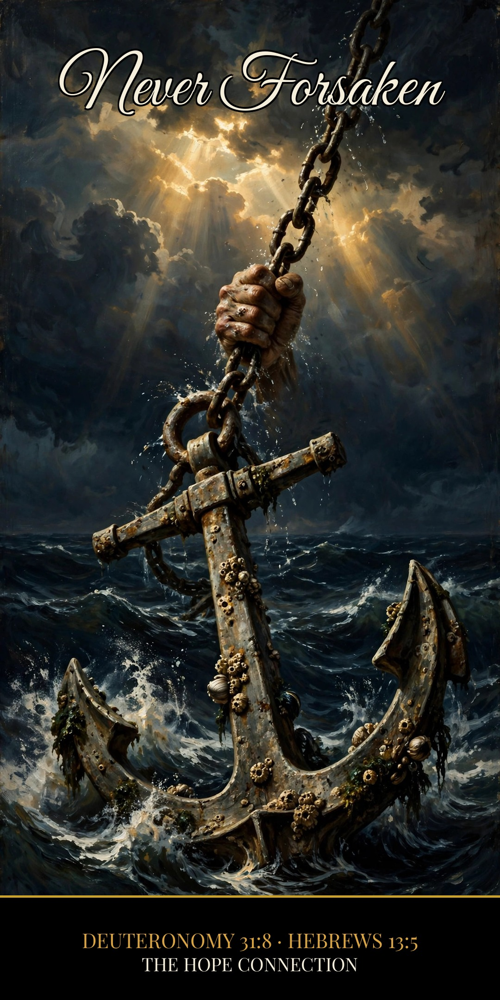

God is not done with you yet — He's not finished with your story. This Thanksgiving morning, before anything else, Lewis recorded this prayer on the porch — for the hurting, for the ones in the middle of healing, and for the one who feels alone today. And Jesus' finished work on the cross is the ultimate thing to be thankful for. He promised, "I will never leave you nor forsake you" (Hebrews 13:5, ESV).
Watch on YouTube: https://youtube.com/shorts/xaStARSccBY
A Prayer for the Hurting, the Healing, and the Lonely
Happy Thanksgiving, family. Before the turkey ever hit the smoker this morning, this was on my heart: if you're watching this, God is not done with you yet — He's not finished with your story. And the finished work of the cross is the ultimate thing to be thankful for.
In this Daily Prayer & Encouragement, I pray for the ones who are still hurting, the ones in the middle of healing, and the one who feels alone today. You are not alone. He promised, "I will never leave you nor forsake you" (Hebrews 13:5).
What are you thanking Him for today? If this prayer met you where you are, share it with someone who needs to hear it today. Remember: no judgement, real hope for wherever you are in life. Come as you are, and Lord willing, leave anchored.
Watch and listen
Thanksgiving — God Is Not Finished With Your Story — Daily Prayer & Encouragement
If this encouraged you, share it with someone who needs to hear it today. Remember: no judgement, real hope for wherever you are in life. Come as you are, and Lord willing, leave anchored.